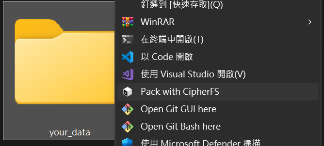
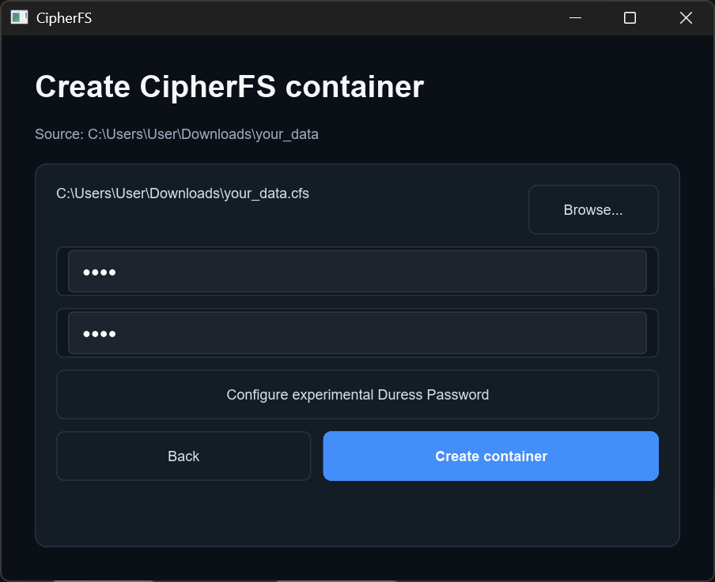
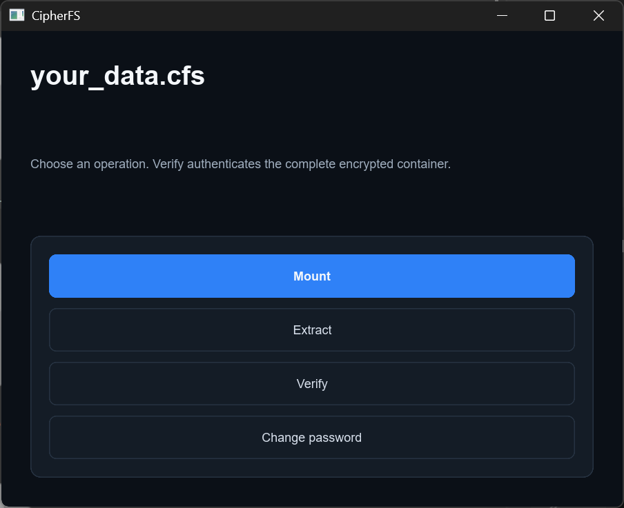
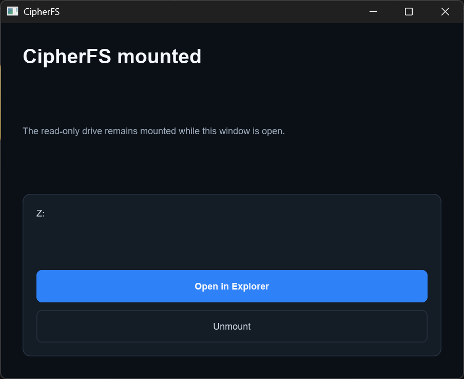
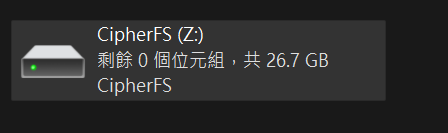
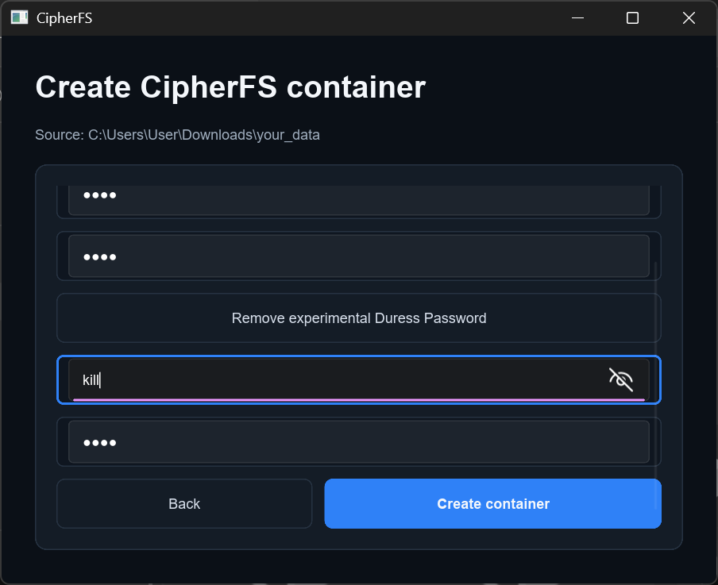

01 / EXPLORER
不離開檔案總管
也能封裝私人檔案
從選取資料夾到開啟加密容器，日常操作都留在熟悉的 Windows 介面。
選取資料夾，使用 Pack with CipherFS，不用先切換到終端機。

Windows Shell · Windows x64
將檔案與資料夾封裝成一個加密的 .cfs 容器。
Interactive documentation
選擇側邊項目，瀏覽 CipherFS 的操作流程、掛載機制與設計原則。
01 / EXPLORER
從選取資料夾到開啟加密容器，日常操作都留在熟悉的 Windows 介面。
選取資料夾，使用 Pack with CipherFS，不用先切換到終端機。

02 / PACK
.cfs 容器選擇輸出位置並設定密碼。資料夾內容會被封裝成一個便於移動與保存的容器檔案。

03 / OPEN
.cfs開啟容器後，可以掛載、解開、驗證完整性，或變更密碼。

04 / MOUNT
CipherFS 透過 WinFsp 將容器掛載成唯讀磁碟，讓你直接在 Explorer 中瀏覽內容。

RESULT / EXPLORER

容器內容會出現在獨立磁碟機代號中；關閉掛載視窗即可結束存取。
05 / PRINCIPLES
CipherFS 堅持極簡、透明且無任何外部依賴的本機架構原則。
封裝、掛載與驗證都在本機完成，不依賴雲端服務。
檔案與資料夾被整理成一個 .cfs 檔案，便於移動與保存。
透過 WinFsp 掛載時保持唯讀，避免瀏覽過程改動容器內容。
程式碼、格式與測試方式公開，可在 GitHub 上檢視。
06 / EXPERIMENTAL
建立容器時可以設定實驗性的脅迫密碼。這項功能仍在測試階段，不應被視為已驗證的反鑑識或安全保證。

CipherFS for Windows